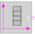
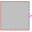
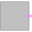

BooleanTableGenerate a Boolean output signal based on a vector of time instants |

|
Diagram

Information
This information is part of the Modelica Standard Library maintained by the Modelica Association.
The Boolean output y is a signal defined by parameter vector table. In the vector time points are stored. The table interpolation has the following properties:
- At every time point, the output y changes its value to the negated value of the previous one.
- Values outside of the table range, are computed by
extrapolation according to the setting of parameter extrapolation:
extrapolation = 1: Hold the startValue or last value of the table, if outside of the table scope. = 2: Extrapolate by using the derivative at the first/last table points if outside of the table scope. (This setting is not suitable and triggers an assert.) = 3: Periodically repeat the table data (periodical function). = 4: No extrapolation, i.e. extrapolation triggers an error - Via parameter shiftTime the curve defined by the table can be shifted in time. The time instants stored in the table are therefore relative to shiftTime.
- If time < startTime, no interpolation is performed and false is used as ordinate value for the output.
The precise semantics is:
if size(table,1) == 0 then
y = startValue;
else
// time < table[1]: y = startValue
// table[1] ≤ time < table[2]: y = not startValue
// table[2] ≤ time < table[3]: y = startValue
// table[3] ≤ time < table[4]: y = not startValue
// ...
end if;
Parameters (5)
| table |
Value: {0, 1} Type: Time[:] (s) Description: Vector of time points. At every time point, the output y gets its opposite value (e.g., table={0,1}) |
|---|---|
| startValue |
Value: false Type: Boolean Description: Start value of y. At time = table[1], y changes to 'not startValue' |
| extrapolation |
Value: Modelica.Blocks.Types.Extrapolation.HoldLastPoint Type: Extrapolation Description: Extrapolation of data outside the definition range |
| startTime |
Value: -Modelica.Constants.inf Type: Time (s) Description: Output = false for time < startTime |
| shiftTime |
Value: 0 Type: Time (s) Description: Shift time of table |
Connectors (1)
| y |
Type: BooleanOutput Description: Connector of Boolean output signal |
|---|
Components (2)
| combiTimeTable |
Type: CombiTimeTable |
|
|---|---|---|
| realToBoolean |
Type: RealToBoolean |
Used in Examples (5)
|
Modelica.Blocks.Examples Demonstrates the usage of logical sources together with their diagram animation |
|
|
Modelica.Blocks.Examples Demonstrates the usage of logical blocks |
|
|
Modelica.Blocks.Examples Demonstrates the usage of blocks from Modelica.Blocks.MathBoolean |
|
|
Modelica.Blocks.Examples Demonstrates the usage of blocks from Modelica.Blocks.Interaction.Show |
|
|
Modelica.Electrical.Analog.Examples Characteristic of ideal thyristors |
Used in Components (3)
|
Modelica.Blocks.Sources Boolean signal source that mimics a radio button |
|
|  |
Modelica.StateGraph.Temporary Button that sets its output to true when pressed and is reset when an element of 'reset' becomes true |
|  |
Modelica.Fluid.Examples.ControlledTankSystem.Utilities Button that sets its output to true when pressed and is reset when an element of 'reset' becomes true |